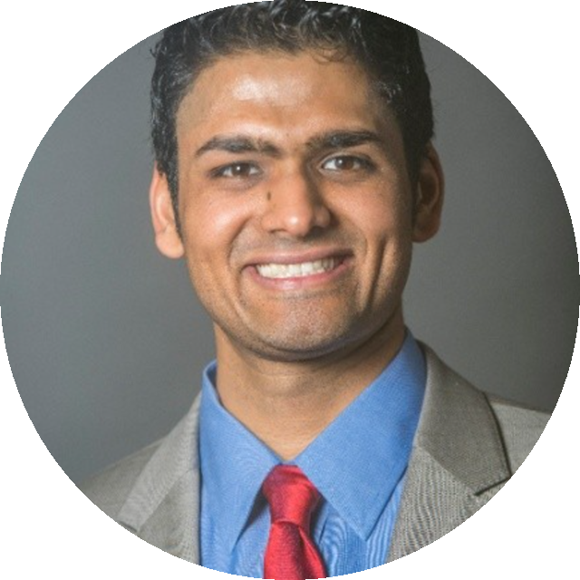

Meet Your Physician
Dr. Balaji Sridhar, MD
Founder & Medical Director
Dr. Sridhar brings a rigorous, evidence-based philosophy to regenerative orthopedic medicine. Specializing in orthobiologics, he focuses on treating the root cause of musculoskeletal conditions, not masking symptoms.
Every treatment plan is tailored to the individual, combining precise diagnostics with the latest biologic therapies.
Our Founding Belief
A new standard in regenerative orthopedics
Precision Regenerative Health was founded on the belief that the body has an extraordinary capacity to heal when given the right tools. By combining advanced orthobiologic techniques with a deeply personalized approach, we help patients move past pain without defaulting to surgery.
Root cause
Treating the source of musculoskeletal conditions, not just the symptoms.
Evidence-based
Transparent discussions about what the research does and doesn't support.
Personalized
One-on-one care with a plan built around your condition and goals.
Minimally invasive
Ultrasound-guided procedures designed to help you avoid or delay surgery.
Training & Expertise
Credentials
- Board-Certified Orthopedic Specialist
- Fellowship-Trained in Sports Medicine
- Orthopedic Surgery & Sports Medicine
- Advanced Training in Regenerative Injections
- Ultrasound-Guided Procedure Expertise
- Platelet-Rich Plasma (PRP) & BMAC Injections
- Cartilage Restoration & Joint Preservation
- Dedicated to Patient-Centered, Minimally Invasive Care
Free Discovery Call
Let's talk about your goals.
Ready to explore whether orthobiologics are right for you? Start with a free, no-obligation conversation.